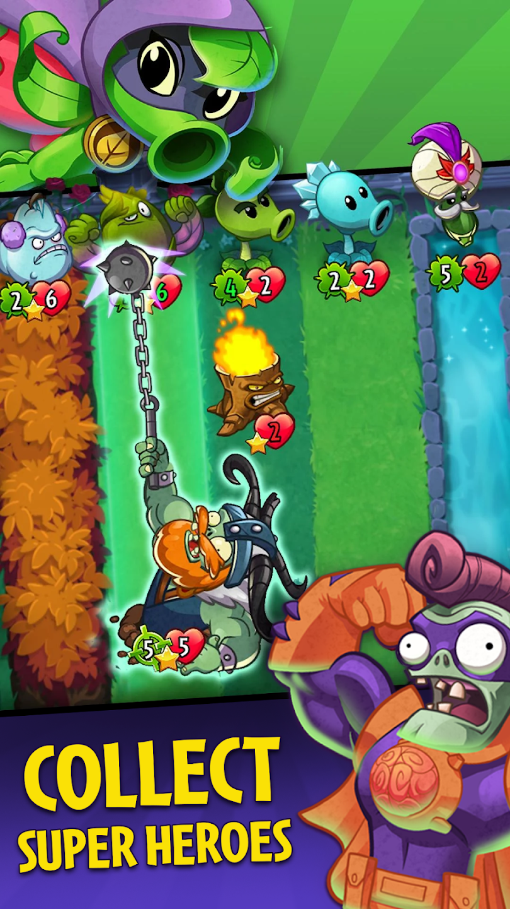

O tej grze
"Zombie najechały twój dom, a jedyną obroną, jaką posiadasz, jest arsenał roślin! Za pomocą godnych eksperymentów kosmicznych, niszczących zombi roślin, takich jak dmuchawki czy wiśniowe bomby, musisz myśleć szybko i sadzić jeszcze szybciej, aby powstrzymać tuziny nieumarłych na ich drodze."
Od 2009 roku studio PopCap utworzyło na ten moment 5 gier o tematyce roślin zwalczających Nieumarłych (Zombie). W wielu przypadkach wszystkie wersje gier opierają się o to samo, czyli walczenie roślin z zombie. W dwóch pierwszych odsłonach, czyli Plants VS Zombies, a także Plants VS Zombies 2 mamy doczenienia z obroną domu bohatera (szalonego Dave'a) przed atakami przeciwników, ustawiając na ich drodze rośliny. Trzy następne gry zostały opartę o rozgrywkę on-line z innymi graczami.
Czym jest PVZ Heroes?
Jest to gra karciana, oaprta o znaną już serię gier. Wydano ją na telefony, jak i tablety. W grze występują karty z atakiem i wytrzymałością, a także niektóre mają swoje własne umiejętności. Można grać talią roślin albo Zombie, gdzie obie talie posiadająróżne podtalie z swoimi rodzajami kart, na przykład talia oparta o obronę. W grze występują bohaterowie - są to "komanderzy" talii. Podczas rundy można zdobyć ich specjalną umiejetność. Gdy ich życie spadnie do zera, gracz umiera. w grze występują także mikrotranzakcje.
Twórcy dodali do gry chociaż nie za bardzo rozwiniętą fabułę, ale może zaciekawić fanów gier od tego studia. Może się wydawać monotonna i żmudna, ponieważ jest opisana w wersji "komiksowej" co każdą wygraną rundę. Jeżeli chcesz się więcej dowiedzieć o PVZ Heroes kliknji tutaj.
Wybrane ciekawostki
- PopCap zapowiedziało, że nadchodzi Plants VS Zombies 3
- Pierwsza odsłona gry ma już 14 lat.
- Podtytuł Garden Warfare jest żartobliwym nawiązaniem do gry Call of Duty 4: Modern Warfare.
- Istnieje błąd, który polega na tym, że można być rośliną w drużynie zombie lub na odwrót (PVZ Garden Warfare).
- 16 maja 2022 roku na platformie steam dodano gry z serii Plants VS Zombies
- Na mapach w PVW Garden Warfare 2 można zebrać gnomy, po których zebraniu ich wszytkich, gracz może otworzyć pod ziemią kryptę z ogromną ilością pieniędzy